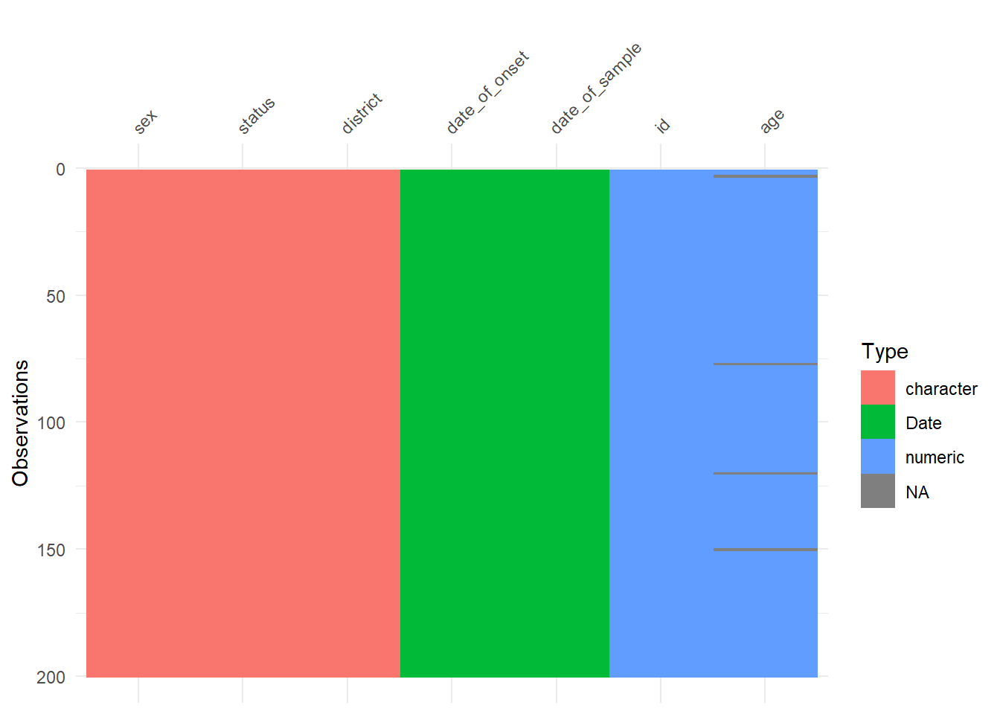
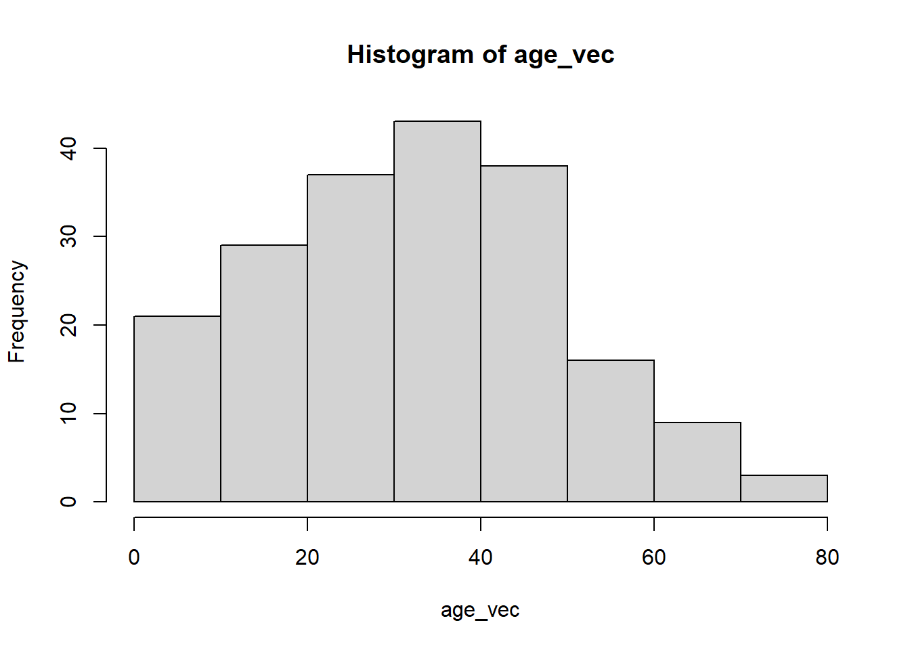
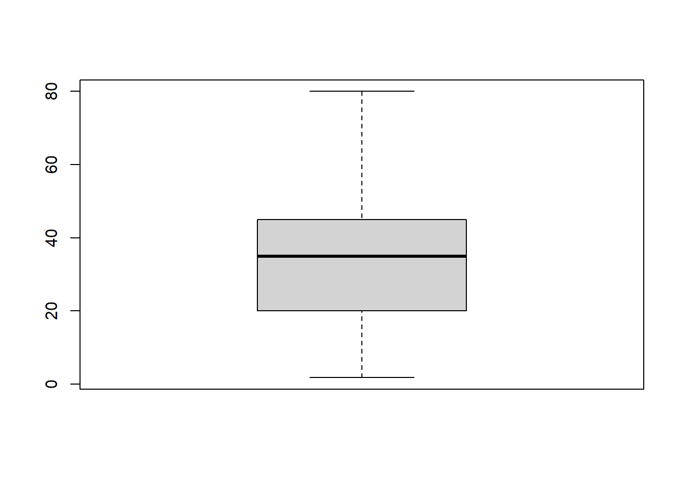
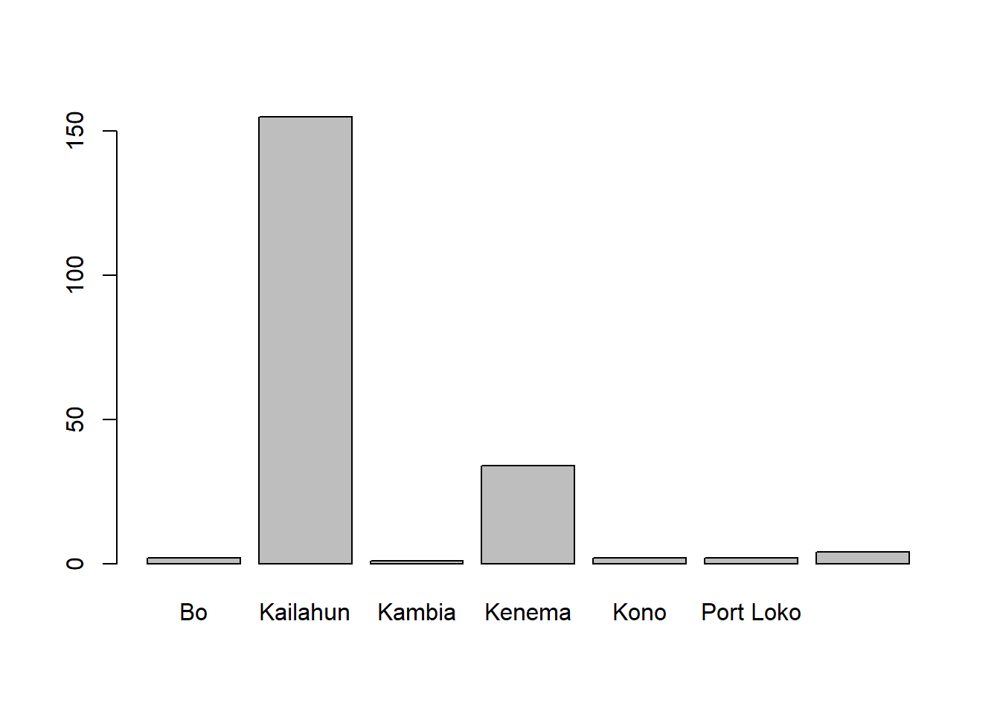
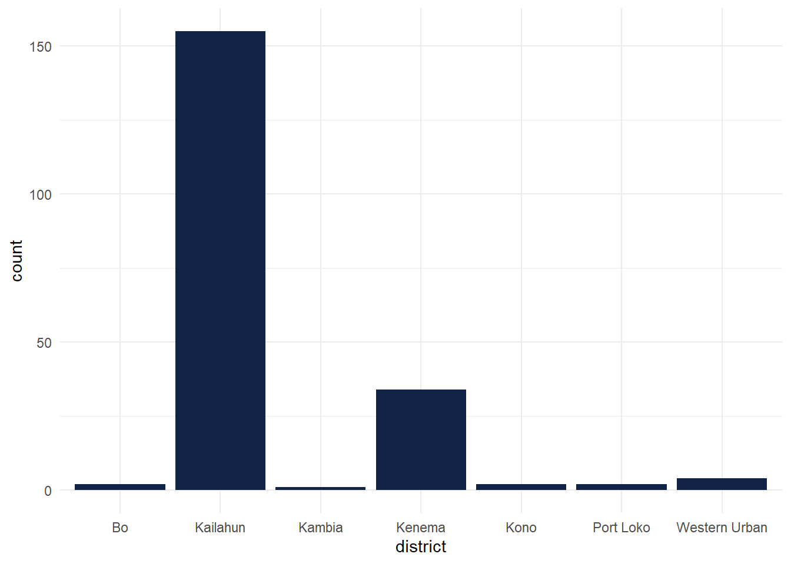
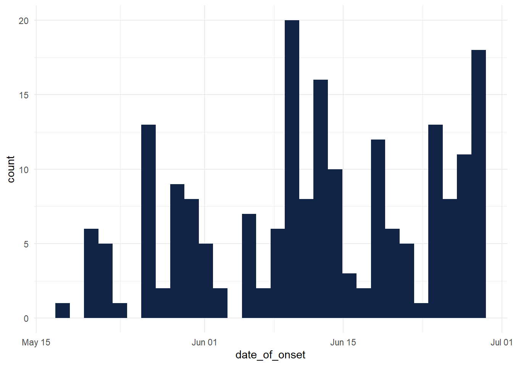

library(readr)
ebola_sierra_leone <- read_csv("C:/Users/Hon.Olayinka/Documents/GitHub/tv_hours_pages/ebola_sierra_leone.csv")Ebola Sierra Leone analysis
Load packages —-
Load data —-
Explore data —-
head(ebola_sierra_leone)# A tibble: 6 × 7
id age sex status date_of_onset date_of_sample district
<dbl> <dbl> <chr> <chr> <date> <date> <chr>
1 92 6 M confirmed 2014-06-10 2014-06-15 Kailahun
2 51 46 F confirmed 2014-05-30 2014-06-04 Kailahun
3 230 NA M confirmed 2014-06-26 2014-06-30 Kenema
4 139 25 F confirmed 2014-06-13 2014-06-18 Kailahun
5 8 8 F confirmed 2014-05-22 2014-05-27 Kailahun
6 215 49 M confirmed 2014-06-24 2014-06-29 Kailahunncol(ebola_sierra_leone)[1] 7nrow(ebola_sierra_leone)[1] 200dim(ebola_sierra_leone)[1] 200 7summary(ebola_sierra_leone) id age sex status
Min. : 1.00 Min. : 1.80 Length:200 Length:200
1st Qu.: 62.75 1st Qu.:20.00 Class :character Class :character
Median :131.50 Median :35.00 Mode :character Mode :character
Mean :136.72 Mean :33.85
3rd Qu.:208.25 3rd Qu.:45.00
Max. :285.00 Max. :80.00
NA's :4
date_of_onset date_of_sample district
Min. :2014-05-18 Min. :2014-05-23 Length:200
1st Qu.:2014-06-01 1st Qu.:2014-06-07 Class :character
Median :2014-06-13 Median :2014-06-18 Mode :character
Mean :2014-06-12 Mean :2014-06-17
3rd Qu.:2014-06-23 3rd Qu.:2014-06-29
Max. :2014-06-29 Max. :2014-07-17
visdat::vis_dat(ebola_sierra_leone)
Categorical overview —-
cat_summary <- inspect_cat(ebola_sierra_leone)
cat_summary_plot <- show_plot(cat_summary) # function nesting
ggplotly(cat_summary_plot)Numerical overview —-
num_summary <- inspect_num(ebola_sierra_leone)
num_summary_plot <- show_plot(num_summary)
ggplotly(num_summary_plot)Analyzing individual variables: numeric —-
ebola_sierra_leone$age [1] 6.0 46.0 NA 25.0 8.0 49.0 13.0 50.0 35.0 38.0 60.0 18.0 10.0 14.0 50.0
[16] 35.0 43.0 17.0 3.0 60.0 38.0 41.0 49.0 12.0 74.0 21.0 27.0 41.0 42.0 60.0
[31] 30.0 50.0 50.0 22.0 40.0 35.0 19.0 3.0 34.0 21.0 73.0 65.0 30.0 70.0 12.0
[46] 15.0 42.0 60.0 14.0 40.0 33.0 43.0 45.0 14.0 14.0 40.0 35.0 30.0 17.0 39.0
[61] 20.0 8.0 40.0 42.0 53.0 18.0 40.0 20.0 45.0 40.0 60.0 44.0 33.0 23.0 45.0
[76] 7.0 NA 35.0 36.0 42.0 35.0 25.0 30.0 30.0 28.0 14.0 20.0 60.0 67.0 35.0
[91] 50.0 4.0 28.0 38.0 30.0 26.0 37.0 30.0 3.0 56.0 32.0 35.0 54.0 42.0 48.0
[106] 11.0 1.8 63.0 55.0 20.0 62.0 62.0 42.0 65.0 29.0 20.0 33.0 30.0 35.0 NA
[121] 50.0 16.0 3.0 22.0 7.0 50.0 17.0 40.0 21.0 9.0 27.0 52.0 50.0 25.0 10.0
[136] 30.0 32.0 38.0 30.0 50.0 26.0 35.0 3.0 50.0 60.0 40.0 34.0 4.0 42.0 NA
[151] 54.0 18.0 45.0 30.0 35.0 35.0 16.0 26.0 23.0 45.0 45.0 45.0 38.0 45.0 35.0
[166] 30.0 60.0 5.0 18.0 2.0 70.0 35.0 3.0 30.0 80.0 62.0 20.0 45.0 18.0 28.0
[181] 48.0 38.0 39.0 26.0 60.0 35.0 20.0 50.0 11.0 36.0 29.0 57.0 35.0 26.0 6.0
[196] 45.0 27.0 6.0 40.0 29.0mean(ebola_sierra_leone$age, na.rm = TRUE)[1] 33.84592median(ebola_sierra_leone$age, na.rm = T)[1] 35age_vec <- ebola_sierra_leone$age
sd(age_vec, na.rm = T)[1] 17.26864min(age_vec, na.rm = T)[1] 1.8max(age_vec, na.rm = T)[1] 80summary(age_vec, na.rm = T) Min. 1st Qu. Median Mean 3rd Qu. Max. NA's
1.80 20.00 35.00 33.85 45.00 80.00 4 length(age_vec)[1] 200sum(age_vec, na.rm = T)[1] 6633.8# Visualizing individual variables: numeric ----
hist(age_vec)
boxplot(age_vec)
Analyzing single categorical variable: —-
ebola_sierra_leone$district [1] "Kailahun" "Kailahun" "Kenema" "Kailahun"
[5] "Kailahun" "Kailahun" "Kailahun" "Kailahun"
[9] "Kenema" "Kailahun" "Kailahun" "Kailahun"
[13] "Kailahun" "Kailahun" "Kailahun" "Kailahun"
[17] "Kailahun" "Kenema" "Kono" "Kailahun"
[21] "Kailahun" "Kailahun" "Kenema" "Kailahun"
[25] "Kailahun" "Kailahun" "Kailahun" "Kailahun"
[29] "Kenema" "Kenema" "Kenema" "Kailahun"
[33] "Kailahun" "Bo" "Kailahun" "Kailahun"
[37] "Kailahun" "Kenema" "Kenema" "Kenema"
[41] "Kailahun" "Kailahun" "Kailahun" "Kailahun"
[45] "Kailahun" "Kailahun" "Western Urban" "Kailahun"
[49] "Kailahun" "Kailahun" "Kailahun" "Kailahun"
[53] "Kailahun" "Kailahun" "Kailahun" "Kailahun"
[57] "Kailahun" "Kailahun" "Kailahun" "Kailahun"
[61] "Kailahun" "Kenema" "Western Urban" "Kambia"
[65] "Kailahun" "Kailahun" "Kailahun" "Kailahun"
[69] "Kailahun" "Kailahun" "Kailahun" "Kailahun"
[73] "Kenema" "Kailahun" "Kailahun" "Kenema"
[77] "Kailahun" "Kailahun" "Kenema" "Kailahun"
[81] "Kailahun" "Kailahun" "Kailahun" "Kailahun"
[85] "Kailahun" "Kailahun" "Kailahun" "Kailahun"
[89] "Kailahun" "Kenema" "Kailahun" "Kailahun"
[93] "Kailahun" "Kono" "Port Loko" "Kenema"
[97] "Kailahun" "Kailahun" "Kailahun" "Kailahun"
[101] "Kenema" "Kailahun" "Kailahun" "Kenema"
[105] "Kailahun" "Kailahun" "Kailahun" "Kailahun"
[109] "Kailahun" "Kailahun" "Kenema" "Western Urban"
[113] "Kailahun" "Kailahun" "Kailahun" "Kailahun"
[117] "Kailahun" "Kailahun" "Kailahun" "Kailahun"
[121] "Kailahun" "Kailahun" "Kenema" "Kailahun"
[125] "Kailahun" "Kenema" "Kailahun" "Port Loko"
[129] "Kailahun" "Kailahun" "Kailahun" "Kailahun"
[133] "Kailahun" "Kailahun" "Kailahun" "Kailahun"
[137] "Kailahun" "Kailahun" "Kailahun" "Kailahun"
[141] "Kailahun" "Kailahun" "Kailahun" "Kenema"
[145] "Kenema" "Kailahun" "Kenema" "Kailahun"
[149] "Kailahun" "Kailahun" "Kailahun" "Kailahun"
[153] "Kenema" "Kailahun" "Kailahun" "Kenema"
[157] "Kailahun" "Kenema" "Kailahun" "Kailahun"
[161] "Kenema" "Kailahun" "Kailahun" "Kailahun"
[165] "Kailahun" "Bo" "Kailahun" "Kailahun"
[169] "Kailahun" "Kailahun" "Kailahun" "Kailahun"
[173] "Kenema" "Kailahun" "Kailahun" "Kenema"
[177] "Kailahun" "Kailahun" "Kailahun" "Kailahun"
[181] "Kailahun" "Kailahun" "Kailahun" "Western Urban"
[185] "Kailahun" "Kailahun" "Kenema" "Kailahun"
[189] "Kailahun" "Kailahun" "Kailahun" "Kailahun"
[193] "Kailahun" "Kenema" "Kenema" "Kailahun"
[197] "Kailahun" "Kailahun" "Kailahun" "Kenema" table(ebola_sierra_leone$district)
Bo Kailahun Kambia Kenema Kono
2 155 1 34 2
Port Loko Western Urban
2 4 janitor::tabyl(ebola_sierra_leone, district, sex) district F M
Bo 0 2
Kailahun 91 64
Kambia 0 1
Kenema 20 14
Kono 0 2
Port Loko 1 1
Western Urban 2 2Analyzing single categorical variable: —-
barplot(table(ebola_sierra_leone$district))
esquisser(ebola_sierra_leone)
ggplot(ebola_sierra_leone) +
aes(x = district) +
geom_bar(fill = "#112446") +
theme_minimal()
Questions —-
When was the first case reported? (Hint: look at the date of sample)
min(ebola_sierra_leone$date_of_sample)[1] "2014-05-23"What was the median age of those affected?
median(ebola_sierra_leone$age, na.rm = T)[1] 35Had there been more cases in men or women?
janitor::tabyl(ebola_sierra_leone$sex) ebola_sierra_leone$sex n percent
F 114 0.57
M 86 0.43What district had had the most reported cases?
janitor::tabyl(ebola_sierra_leone$district) ebola_sierra_leone$district n percent
Bo 2 0.010
Kailahun 155 0.775
Kambia 1 0.005
Kenema 34 0.170
Kono 2 0.010
Port Loko 2 0.010
Western Urban 4 0.020By the end of June 2014, was the outbreak growing or receding?
ggplot(ebola_sierra_leone) +
aes(x = date_of_onset) +
geom_histogram(bins = 30L, fill = "#112446") +
theme_minimal()